SCZ - Brain Cortex
sheng Qian
2021-2-6
Last updated: 2022-03-03
Checks: 5 2
Knit directory: cTWAS_analysis/
This reproducible R Markdown analysis was created with workflowr (version 1.7.0). The Checks tab describes the reproducibility checks that were applied when the results were created. The Past versions tab lists the development history.
The R Markdown file has unstaged changes. To know which version of the R Markdown file created these results, you’ll want to first commit it to the Git repo. If you’re still working on the analysis, you can ignore this warning. When you’re finished, you can run wflow_publish to commit the R Markdown file and build the HTML.
Great job! The global environment was empty. Objects defined in the global environment can affect the analysis in your R Markdown file in unknown ways. For reproduciblity it’s best to always run the code in an empty environment.
The command set.seed(20211220) was run prior to running the code in the R Markdown file. Setting a seed ensures that any results that rely on randomness, e.g. subsampling or permutations, are reproducible.
Great job! Recording the operating system, R version, and package versions is critical for reproducibility.
Nice! There were no cached chunks for this analysis, so you can be confident that you successfully produced the results during this run.
Using absolute paths to the files within your workflowr project makes it difficult for you and others to run your code on a different machine. Change the absolute path(s) below to the suggested relative path(s) to make your code more reproducible.
| absolute | relative |
|---|---|
| /project2/xinhe/shengqian/cTWAS/cTWAS_analysis/data/ | data |
| /project2/xinhe/shengqian/cTWAS/cTWAS_analysis/code/ctwas_config.R | code/ctwas_config.R |
Great! You are using Git for version control. Tracking code development and connecting the code version to the results is critical for reproducibility.
The results in this page were generated with repository version 0ed6e7b. See the Past versions tab to see a history of the changes made to the R Markdown and HTML files.
Note that you need to be careful to ensure that all relevant files for the analysis have been committed to Git prior to generating the results (you can use wflow_publish or wflow_git_commit). workflowr only checks the R Markdown file, but you know if there are other scripts or data files that it depends on. Below is the status of the Git repository when the results were generated:
Ignored files:
Ignored: .ipynb_checkpoints/
Ignored: data/AF/
Untracked files:
Untracked: Rplot.png
Untracked: analysis/.ipynb_checkpoints/
Untracked: code/.ipynb_checkpoints/
Untracked: code/AF_out/
Untracked: code/Autism_out/
Untracked: code/BMI_S_out/
Untracked: code/BMI_out/
Untracked: code/Glucose_out/
Untracked: code/LDL_S_out/
Untracked: code/SCZ_S_out/
Untracked: code/SCZ_out/
Untracked: code/T2D_out/
Untracked: code/ctwas_config.R
Untracked: code/mapping.R
Untracked: code/out/
Untracked: code/run_AF_analysis.sbatch
Untracked: code/run_AF_analysis.sh
Untracked: code/run_AF_ctwas_rss_LDR.R
Untracked: code/run_Autism_analysis.sbatch
Untracked: code/run_Autism_analysis.sh
Untracked: code/run_Autism_ctwas_rss_LDR.R
Untracked: code/run_BMI_analysis.sbatch
Untracked: code/run_BMI_analysis.sh
Untracked: code/run_BMI_analysis_S.sbatch
Untracked: code/run_BMI_analysis_S.sh
Untracked: code/run_BMI_ctwas_rss_LDR.R
Untracked: code/run_BMI_ctwas_rss_LDR_S.R
Untracked: code/run_Glucose_analysis.sbatch
Untracked: code/run_Glucose_analysis.sh
Untracked: code/run_Glucose_ctwas_rss_LDR.R
Untracked: code/run_LDL_analysis_S.sbatch
Untracked: code/run_LDL_analysis_S.sh
Untracked: code/run_LDL_ctwas_rss_LDR_S.R
Untracked: code/run_SCZ_analysis.sbatch
Untracked: code/run_SCZ_analysis.sh
Untracked: code/run_SCZ_analysis_S.sbatch
Untracked: code/run_SCZ_analysis_S.sh
Untracked: code/run_SCZ_ctwas_rss_LDR.R
Untracked: code/run_SCZ_ctwas_rss_LDR_S.R
Untracked: code/run_T2D_analysis.sbatch
Untracked: code/run_T2D_analysis.sh
Untracked: code/run_T2D_ctwas_rss_LDR.R
Untracked: code/wflow_build.R
Untracked: code/wflow_build.sbatch
Untracked: data/.ipynb_checkpoints/
Untracked: data/Autism/
Untracked: data/BMI/
Untracked: data/BMI_S/
Untracked: data/Glucose/
Untracked: data/LDL_S/
Untracked: data/SCZ/
Untracked: data/SCZ_S/
Untracked: data/T2D/
Untracked: data/TEST/
Untracked: data/UKBB/
Untracked: data/UKBB_SNPs_Info.text
Untracked: data/gene_OMIM.txt
Untracked: data/gene_pip_0.8.txt
Untracked: data/mashr_Heart_Atrial_Appendage.db
Untracked: data/mashr_sqtl/
Untracked: data/summary_known_genes_annotations.xlsx
Untracked: data/untitled.txt
Unstaged changes:
Modified: analysis/SCZ_Brain_Amygdala.Rmd
Modified: analysis/SCZ_Brain_Amygdala_S.Rmd
Modified: analysis/SCZ_Brain_Anterior_cingulate_cortex_BA24.Rmd
Modified: analysis/SCZ_Brain_Anterior_cingulate_cortex_BA24_S.Rmd
Modified: analysis/SCZ_Brain_Caudate_basal_ganglia.Rmd
Modified: analysis/SCZ_Brain_Cerebellar_Hemisphere.Rmd
Modified: analysis/SCZ_Brain_Cerebellum.Rmd
Modified: analysis/SCZ_Brain_Cortex.Rmd
Modified: analysis/SCZ_Brain_Cortex_S.Rmd
Modified: analysis/SCZ_Brain_Frontal_Cortex_BA9.Rmd
Modified: analysis/SCZ_Brain_Frontal_Cortex_BA9_S.Rmd
Modified: analysis/SCZ_Brain_Hippocampus.Rmd
Modified: analysis/SCZ_Brain_Hypothalamus.Rmd
Modified: analysis/SCZ_Brain_Nucleus_accumbens_basal_ganglia.Rmd
Modified: analysis/SCZ_Brain_Putamen_basal_ganglia_S.Rmd
Modified: analysis/SCZ_Brain_Spinal_cord_cervical_c-1.Rmd
Modified: analysis/SCZ_Brain_Substantia_nigra.Rmd
Note that any generated files, e.g. HTML, png, CSS, etc., are not included in this status report because it is ok for generated content to have uncommitted changes.
These are the previous versions of the repository in which changes were made to the R Markdown (analysis/SCZ_Brain_Cortex.Rmd) and HTML (docs/SCZ_Brain_Cortex.html) files. If you’ve configured a remote Git repository (see ?wflow_git_remote), click on the hyperlinks in the table below to view the files as they were in that past version.
| File | Version | Author | Date | Message |
|---|---|---|---|---|
| html | 75a1466 | sq-96 | 2022-02-27 | Build site. |
| Rmd | 1c69dd2 | sq-96 | 2022-02-27 | update |
| html | ff6403a | sq-96 | 2022-02-27 | Build site. |
| Rmd | 3dd5b4c | sq-96 | 2022-02-27 | update |
Weight QC
#number of imputed weights
nrow(qclist_all)[1] 11805#number of imputed weights by chromosome
table(qclist_all$chr)
1 2 3 4 5 6 7 8 9 10 11 12 13 14 15 16
1182 833 689 456 564 597 567 438 449 491 708 673 233 392 390 558
17 18 19 20 21 22
697 184 896 372 130 306 #number of imputed weights without missing variants
sum(qclist_all$nmiss==0)[1] 9268#proportion of imputed weights without missing variants
mean(qclist_all$nmiss==0)[1] 0.7851Check convergence of parameters
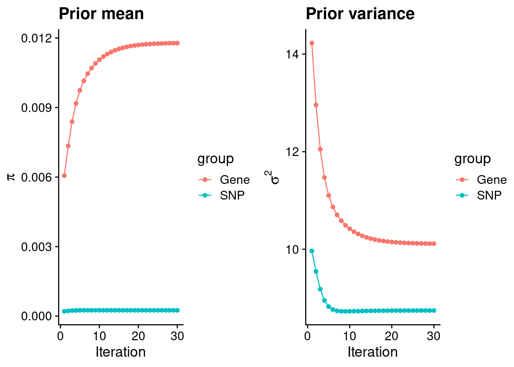
| Version | Author | Date |
|---|---|---|
| ff6403a | sq-96 | 2022-02-27 |
#estimated group prior
estimated_group_prior <- group_prior_rec[,ncol(group_prior_rec)]
names(estimated_group_prior) <- c("gene", "snp")
estimated_group_prior["snp"] <- estimated_group_prior["snp"]*thin #adjust parameter to account for thin argument
print(estimated_group_prior) gene snp
0.0117819 0.0002498 #estimated group prior variance
estimated_group_prior_var <- group_prior_var_rec[,ncol(group_prior_var_rec)]
names(estimated_group_prior_var) <- c("gene", "snp")
print(estimated_group_prior_var) gene snp
10.115 8.745 #report sample size
print(sample_size)[1] 82315#report group size
group_size <- c(nrow(ctwas_gene_res), n_snps)
print(group_size)[1] 11805 7573890#estimated group PVE
estimated_group_pve <- estimated_group_prior_var*estimated_group_prior*group_size/sample_size #check PVE calculation
names(estimated_group_pve) <- c("gene", "snp")
print(estimated_group_pve) gene snp
0.01709 0.20104 #compare sum(PIP*mu2/sample_size) with above PVE calculation
c(sum(ctwas_gene_res$PVE),sum(ctwas_snp_res$PVE))[1] 0.07764 1.58587Genes with highest PIPs
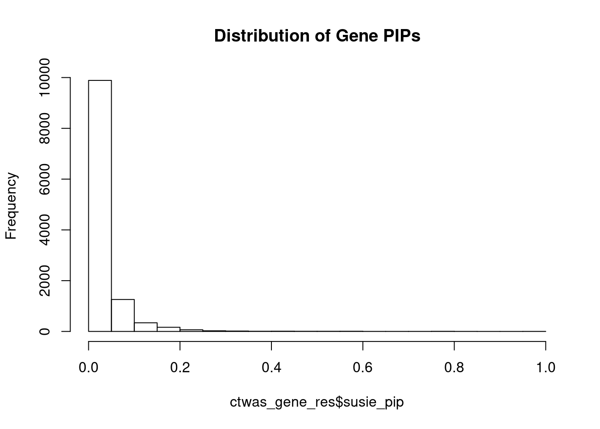
| Version | Author | Date |
|---|---|---|
| ff6403a | sq-96 | 2022-02-27 |
genename region_tag susie_pip mu2 PVE z num_eqtl
11314 ZNF823 19_10 0.9894 30.41 0.0003655 5.576 2
13679 RP11-230C9.4 6_102 0.9655 24.38 0.0002859 -4.864 2
3165 SF3B1 2_117 0.8406 43.74 0.0004467 6.725 1
3085 SPCS1 3_36 0.8248 35.15 0.0003522 -6.504 1
11176 PCBP2 12_33 0.7873 20.60 0.0001970 4.202 1
5055 RCBTB1 13_21 0.7808 21.04 0.0001996 -4.143 2
421 TRIT1 1_25 0.7795 21.04 0.0001992 -4.073 3
11969 AS3MT 10_66 0.7577 38.26 0.0003522 6.688 3
6435 ARFGAP2 11_29 0.7533 24.88 0.0002277 4.740 1
6035 METTL21A 2_122 0.7032 22.51 0.0001923 -4.406 1
13958 CWC25 17_23 0.6607 22.97 0.0001843 -3.926 2
376 CUL3 2_132 0.6584 29.41 0.0002352 -5.491 1
3183 CNPPD1 2_129 0.6333 23.74 0.0001827 -4.678 2
4002 ARMC7 17_42 0.5918 23.73 0.0001706 4.133 2
9752 ZNF354C 5_108 0.5861 21.75 0.0001549 -3.965 1
12379 LINC01305 2_105 0.5824 22.86 0.0001617 4.523 1
4909 CCDC146 7_49 0.5702 20.79 0.0001441 3.799 3
5958 CEP170 1_128 0.5671 24.30 0.0001674 4.678 1
752 PPP2R5B 11_36 0.5634 24.18 0.0001655 -4.577 1
10297 PCBP3 21_23 0.5553 21.27 0.0001435 4.308 1Genes with largest effect sizes
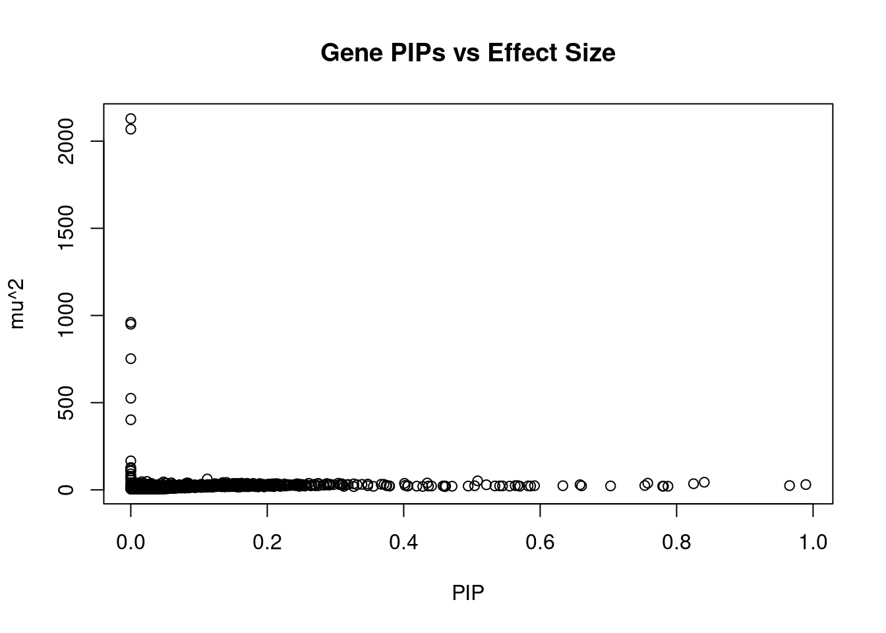
| Version | Author | Date |
|---|---|---|
| ff6403a | sq-96 | 2022-02-27 |
genename region_tag susie_pip mu2 PVE z num_eqtl
7218 ARHGAP27 17_27 0.00000 2129.27 0.000e+00 -1.847 2
3591 CRHR1 17_27 0.00000 2068.72 0.000e+00 -3.270 1
11645 LY6G6C 6_26 0.00000 960.79 0.000e+00 8.872 1
11907 CLIC1 6_26 0.00000 949.93 0.000e+00 9.312 2
10504 SPPL2C 17_27 0.00000 752.27 0.000e+00 -1.978 1
10996 HLA-DRB1 6_26 0.00000 525.39 0.000e+00 4.535 1
11640 HSPA1L 6_26 0.00000 401.95 0.000e+00 -7.126 1
11118 HLA-DQA1 6_26 0.00000 166.39 0.000e+00 1.889 1
4915 SRPK2 7_65 0.00000 128.12 0.000e+00 -1.338 1
10699 HEXIM1 17_27 0.00000 122.54 0.000e+00 -3.372 1
10447 FMNL1 17_27 0.00000 109.85 0.000e+00 1.802 2
12300 SAPCD1 6_26 0.00000 107.97 0.000e+00 -2.781 1
9224 DCAKD 17_27 0.00000 91.74 0.000e+00 -2.216 3
12783 C4A 6_26 0.00000 77.97 0.000e+00 3.137 2
9902 HLA-DQB1 6_26 0.00000 76.18 0.000e+00 1.677 2
10083 ACBD4 17_27 0.00000 68.16 0.000e+00 1.719 2
2927 PRSS16 6_21 0.11206 62.33 8.485e-05 -8.564 2
2503 GOSR2 17_27 0.00000 57.01 0.000e+00 -3.444 2
958 NT5C2 10_66 0.50836 51.68 3.192e-04 -8.066 1
6404 INA 10_66 0.02367 48.25 1.387e-05 -7.264 1Genes with highest PVE
genename region_tag susie_pip mu2 PVE z num_eqtl
3165 SF3B1 2_117 0.8406 43.74 0.0004467 6.725 1
11314 ZNF823 19_10 0.9894 30.41 0.0003655 5.576 2
3085 SPCS1 3_36 0.8248 35.15 0.0003522 -6.504 1
11969 AS3MT 10_66 0.7577 38.26 0.0003522 6.688 3
958 NT5C2 10_66 0.5084 51.68 0.0003192 -8.066 1
13679 RP11-230C9.4 6_102 0.9655 24.38 0.0002859 -4.864 2
376 CUL3 2_132 0.6584 29.41 0.0002352 -5.491 1
6435 ARFGAP2 11_29 0.7533 24.88 0.0002277 4.740 1
2682 MDK 11_29 0.4345 39.31 0.0002075 -6.357 1
5055 RCBTB1 13_21 0.7808 21.04 0.0001996 -4.143 2
421 TRIT1 1_25 0.7795 21.04 0.0001992 -4.073 3
11176 PCBP2 12_33 0.7873 20.60 0.0001970 4.202 1
6035 METTL21A 2_122 0.7032 22.51 0.0001923 -4.406 1
13958 CWC25 17_23 0.6607 22.97 0.0001843 -3.926 2
13401 CORO7 16_4 0.5211 28.97 0.0001834 -5.016 2
3183 CNPPD1 2_129 0.6333 23.74 0.0001827 -4.678 2
6507 TMEM219 16_24 0.4011 37.11 0.0001808 6.243 1
4002 ARMC7 17_42 0.5918 23.73 0.0001706 4.133 2
5958 CEP170 1_128 0.5671 24.30 0.0001674 4.678 1
752 PPP2R5B 11_36 0.5634 24.18 0.0001655 -4.577 1Genes with largest z scores
genename region_tag susie_pip mu2 PVE z num_eqtl
11907 CLIC1 6_26 0.000000 949.93 0.000e+00 9.312 2
11645 LY6G6C 6_26 0.000000 960.79 0.000e+00 8.872 1
2927 PRSS16 6_21 0.112056 62.33 8.485e-05 -8.564 2
958 NT5C2 10_66 0.508364 51.68 3.192e-04 -8.066 1
6413 CNNM2 10_66 0.047944 45.59 2.655e-05 -7.691 1
10662 BTN3A2 6_20 0.016326 46.66 9.254e-06 7.313 3
6404 INA 10_66 0.023665 48.25 1.387e-05 -7.264 1
13518 LINC01415 18_30 0.027640 32.82 1.102e-05 -7.188 2
11640 HSPA1L 6_26 0.000000 401.95 0.000e+00 -7.126 1
12511 ZSCAN31 6_22 0.029845 37.53 1.361e-05 -6.820 3
3165 SF3B1 2_117 0.840602 43.74 4.467e-04 6.725 1
11969 AS3MT 10_66 0.757723 38.26 3.522e-04 6.688 3
11171 ZSCAN26 6_22 0.016156 37.52 7.365e-06 6.645 3
2756 OGFOD2 12_75 0.010145 39.52 4.870e-06 6.518 1
3085 SPCS1 3_36 0.824822 35.15 3.522e-04 -6.504 1
3616 SNX19 11_81 0.134870 41.83 6.853e-05 6.459 2
10809 ZSCAN23 6_22 0.050592 38.63 2.374e-05 -6.415 1
6550 ABCB9 12_75 0.007503 37.92 3.457e-06 6.404 1
2682 MDK 11_29 0.434514 39.31 2.075e-04 -6.357 1
3159 KCNJ13 2_137 0.209359 34.40 8.748e-05 6.333 1Comparing z scores and PIPs
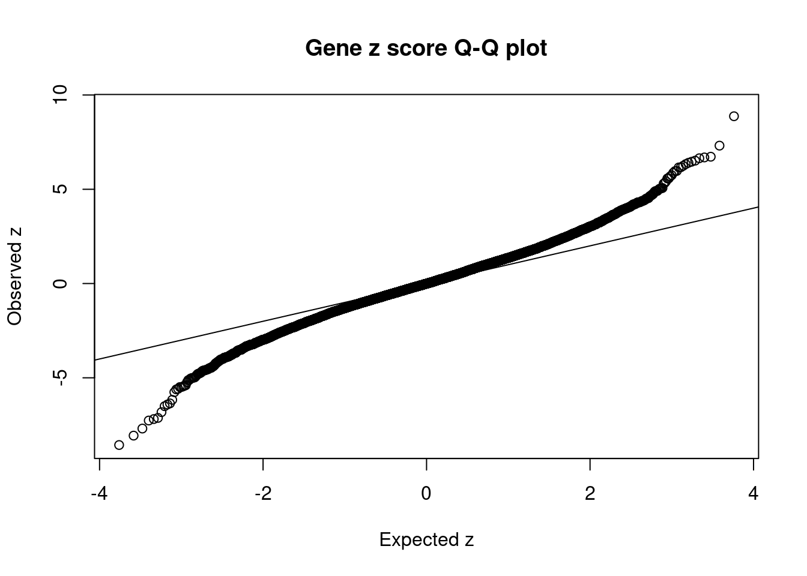
| Version | Author | Date |
|---|---|---|
| ff6403a | sq-96 | 2022-02-27 |
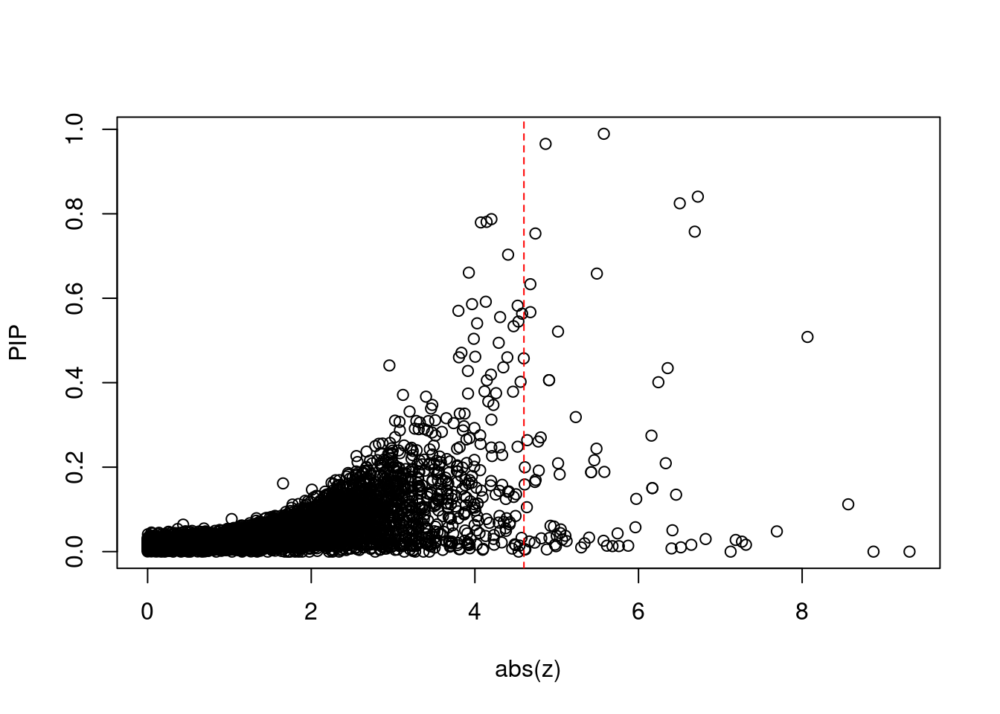
| Version | Author | Date |
|---|---|---|
| ff6403a | sq-96 | 2022-02-27 |
[1] 0.006607GO enrichment analysis for genes with PIP>0.5
#number of genes for gene set enrichment
length(genes)[1] 26Uploading data to Enrichr... Done.
Querying GO_Biological_Process_2021... Done.
Querying GO_Cellular_Component_2021... Done.
Querying GO_Molecular_Function_2021... Done.
Parsing results... Done.
[1] "GO_Biological_Process_2021"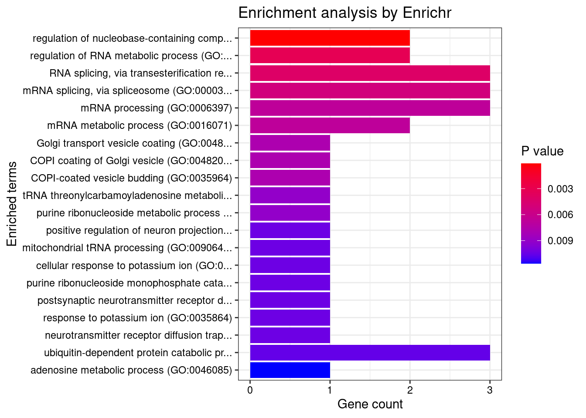
| Version | Author | Date |
|---|---|---|
| ff6403a | sq-96 | 2022-02-27 |
Term
1 regulation of nucleobase-containing compound metabolic process (GO:0019219)
Overlap Adjusted.P.value Genes
1 2/12 0.02022 PCBP3;PCBP2
[1] "GO_Cellular_Component_2021"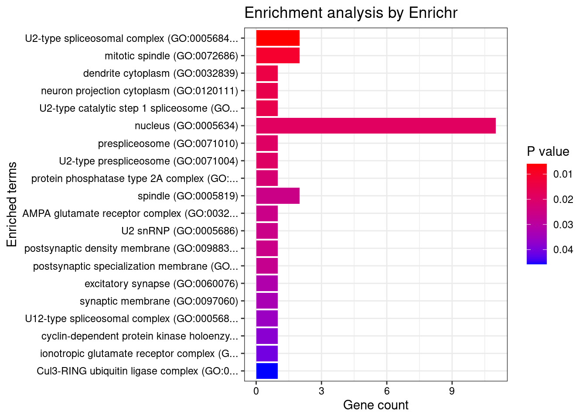
| Version | Author | Date |
|---|---|---|
| ff6403a | sq-96 | 2022-02-27 |
[1] Term Overlap Adjusted.P.value Genes
<0 rows> (or 0-length row.names)
[1] "GO_Molecular_Function_2021"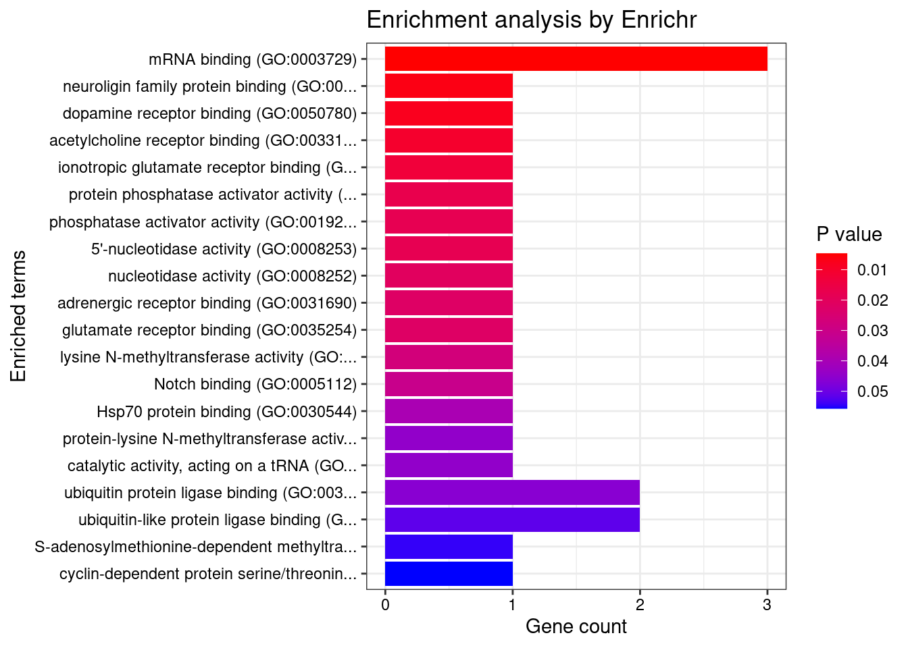
| Version | Author | Date |
|---|---|---|
| ff6403a | sq-96 | 2022-02-27 |
[1] Term Overlap Adjusted.P.value Genes
<0 rows> (or 0-length row.names)DisGeNET enrichment analysis for genes with PIP>0.5
Description FDR Ratio
55 Disproportionate tall stature 0.009895 1/9
56 Reticular Dystrophy Of Retinal Pigment Epithelium 0.009895 1/9
60 PSEUDOHYPOALDOSTERONISM, TYPE IIE 0.009895 1/9
62 SPASTIC PARAPLEGIA 45, AUTOSOMAL RECESSIVE 0.009895 1/9
63 RETINAL DYSTROPHY WITH OR WITHOUT EXTRAOCULAR ANOMALIES 0.009895 1/9
64 COMBINED OXIDATIVE PHOSPHORYLATION DEFICIENCY 35 0.009895 1/9
17 Neoplasms, Glandular and Epithelial 0.011869 1/9
29 Glandular Neoplasms 0.011869 1/9
48 Refractory anemia with ringed sideroblasts 0.011869 1/9
51 Epithelioma 0.011869 1/9
BgRatio
55 1/9703
56 1/9703
60 1/9703
62 1/9703
63 1/9703
64 1/9703
17 2/9703
29 2/9703
48 2/9703
51 2/9703WebGestalt enrichment analysis for genes with PIP>0.5
Loading the functional categories...
Loading the ID list...
Loading the reference list...
Performing the enrichment analysis...Warning in oraEnrichment(interestGeneList, referenceGeneList, geneSet, minNum =
minNum, : No significant gene set is identified based on FDR 0.05!NULL
Sensitivity, specificity and precision for silver standard genes
#number of genes in known annotations
print(length(known_annotations))[1] 130#number of genes in known annotations with imputed expression
print(sum(known_annotations %in% ctwas_gene_res$genename))[1] 66#significance threshold for TWAS
print(sig_thresh)[1] 4.599#number of ctwas genes
length(ctwas_genes)[1] 4#number of TWAS genes
length(twas_genes)[1] 78#show novel genes (ctwas genes with not in TWAS genes)
ctwas_gene_res[ctwas_gene_res$genename %in% novel_genes,report_cols][1] genename region_tag susie_pip mu2 PVE z num_eqtl
<0 rows> (or 0-length row.names)#sensitivity / recall
print(sensitivity) ctwas TWAS
0.01538 0.06154 #specificity
print(specificity) ctwas TWAS
0.9998 0.9940 #precision / PPV
print(precision) ctwas TWAS
0.5000 0.1026 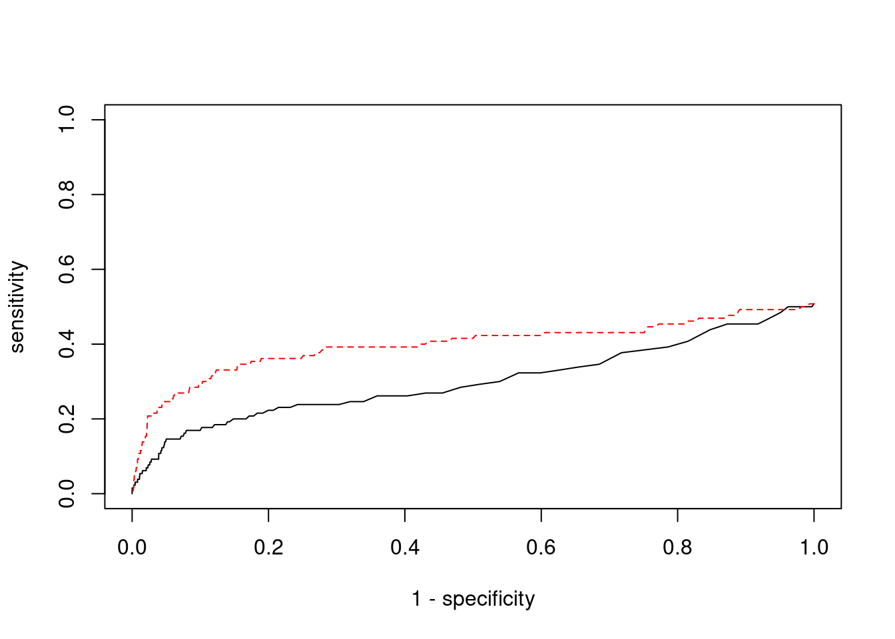
cTWAS is more precise than TWAS in distinguishing silver standard and bystander genes
#number of genes in known annotations (with imputed expression)
print(length(known_annotations))[1] 66#number of bystander genes (with imputed expression)
print(length(unrelated_genes))[1] 856#subset results to genes in known annotations or bystanders
ctwas_gene_res_subset <- ctwas_gene_res[ctwas_gene_res$genename %in% c(known_annotations, unrelated_genes),]
#assign ctwas and TWAS genes
ctwas_genes <- ctwas_gene_res_subset$genename[ctwas_gene_res_subset$susie_pip>0.8]
twas_genes <- ctwas_gene_res_subset$genename[abs(ctwas_gene_res_subset$z)>sig_thresh]
#significance threshold for TWAS
print(sig_thresh)[1] 4.599#number of ctwas genes (in known annotations or bystanders)
length(ctwas_genes)[1] 2#number of TWAS genes (in known annotations or bystanders)
length(twas_genes)[1] 28#sensitivity / recall
sensitivity ctwas TWAS
0.0303 0.1212 #specificity / (1 - False Positive Rate)
specificity ctwas TWAS
1.0000 0.9766 #precision / PPV / (1 - False Discovery Rate)
precision ctwas TWAS
1.0000 0.2857 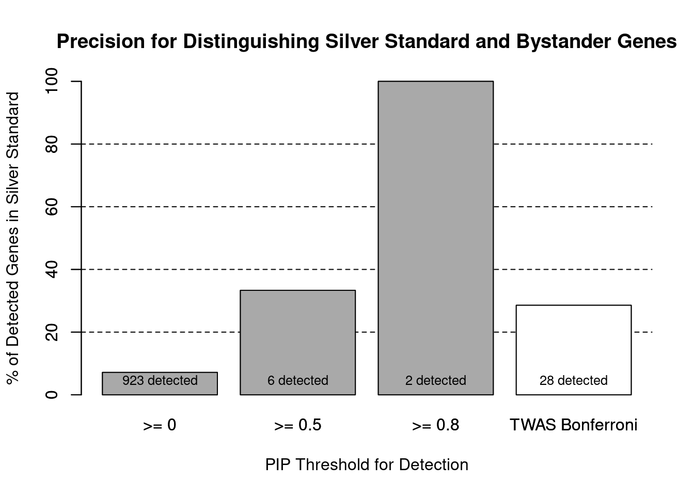
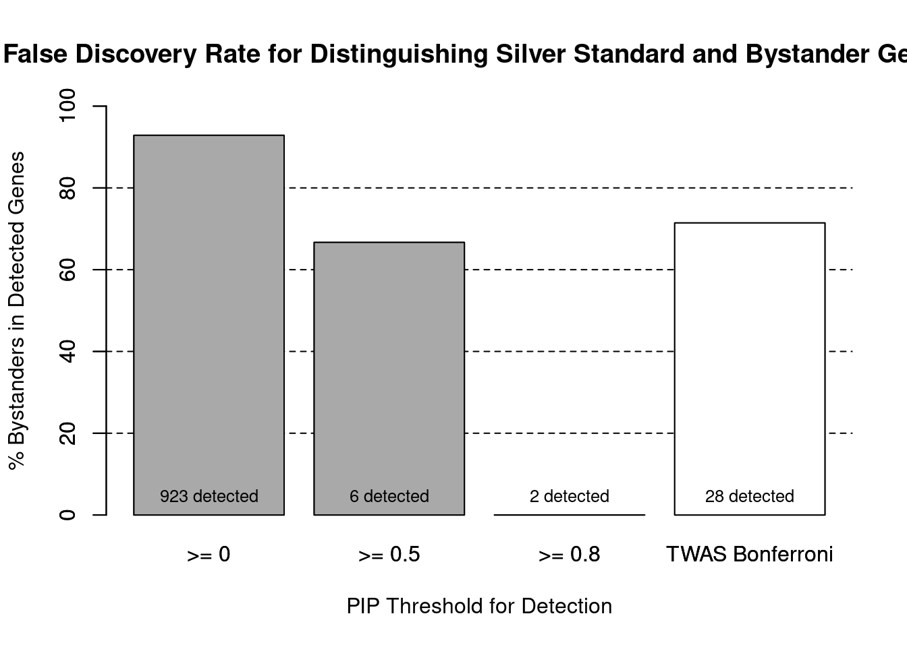
pip_range <- (0:1000)/1000
sensitivity <- rep(NA, length(pip_range))
specificity <- rep(NA, length(pip_range))
for (index in 1:length(pip_range)){
pip <- pip_range[index]
ctwas_genes <- ctwas_gene_res_subset$genename[ctwas_gene_res_subset$susie_pip>=pip]
sensitivity[index] <- sum(ctwas_genes %in% known_annotations)/length(known_annotations)
specificity[index] <- sum(!(unrelated_genes %in% ctwas_genes))/length(unrelated_genes)
}
plot(1-specificity, sensitivity, type="l", xlim=c(0,1), ylim=c(0,1), main="", xlab="1 - Specificity", ylab="Sensitivity")
title(expression("ROC Curve for cTWAS (black) and TWAS (" * phantom("red") * ")"))
title(expression(phantom("ROC Curve for cTWAS (black) and TWAS (") * "red" * phantom(")")), col.main="red")
sig_thresh_range <- seq(from=0, to=max(abs(ctwas_gene_res_subset$z)), length.out=length(pip_range))
for (index in 1:length(sig_thresh_range)){
sig_thresh_plot <- sig_thresh_range[index]
twas_genes <- ctwas_gene_res_subset$genename[abs(ctwas_gene_res_subset$z)>=sig_thresh_plot]
sensitivity[index] <- sum(twas_genes %in% known_annotations)/length(known_annotations)
specificity[index] <- sum(!(unrelated_genes %in% twas_genes))/length(unrelated_genes)
}
lines(1-specificity, sensitivity, xlim=c(0,1), ylim=c(0,1), col="red", lty=1)
abline(a=0,b=1,lty=3)
#add previously computed points from the analysis
ctwas_genes <- ctwas_gene_res_subset$genename[ctwas_gene_res_subset$susie_pip>0.8]
twas_genes <- ctwas_gene_res_subset$genename[abs(ctwas_gene_res_subset$z)>sig_thresh]
points(1-specificity_plot["ctwas"], sensitivity_plot["ctwas"], pch=21, bg="black")
points(1-specificity_plot["TWAS"], sensitivity_plot["TWAS"], pch=21, bg="red")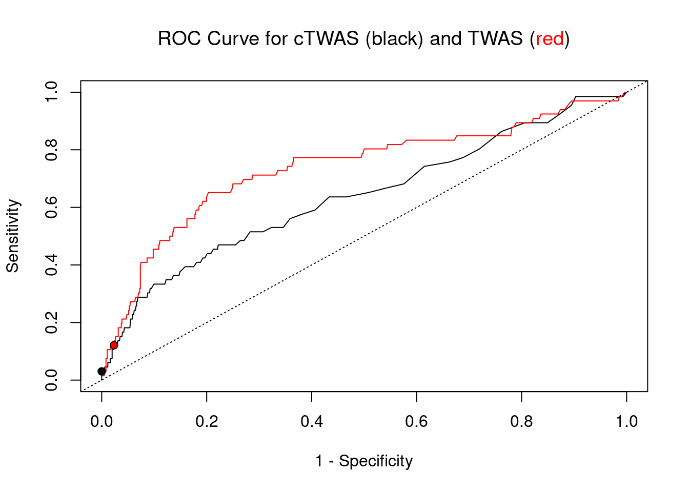
Undetected silver standard genes have low TWAS z-scores or stronger signal from nearby variants
#table of outcomes for silver standard genes
-sort(-table(silver_standard_case))silver_standard_case
Not Imputed Insignificant z-score Nearby SNP(s)
64 58 6
Detected (PIP > 0.8)
2 #show inconclusive genes
silver_standard_case[silver_standard_case=="Inconclusive"]named character(0)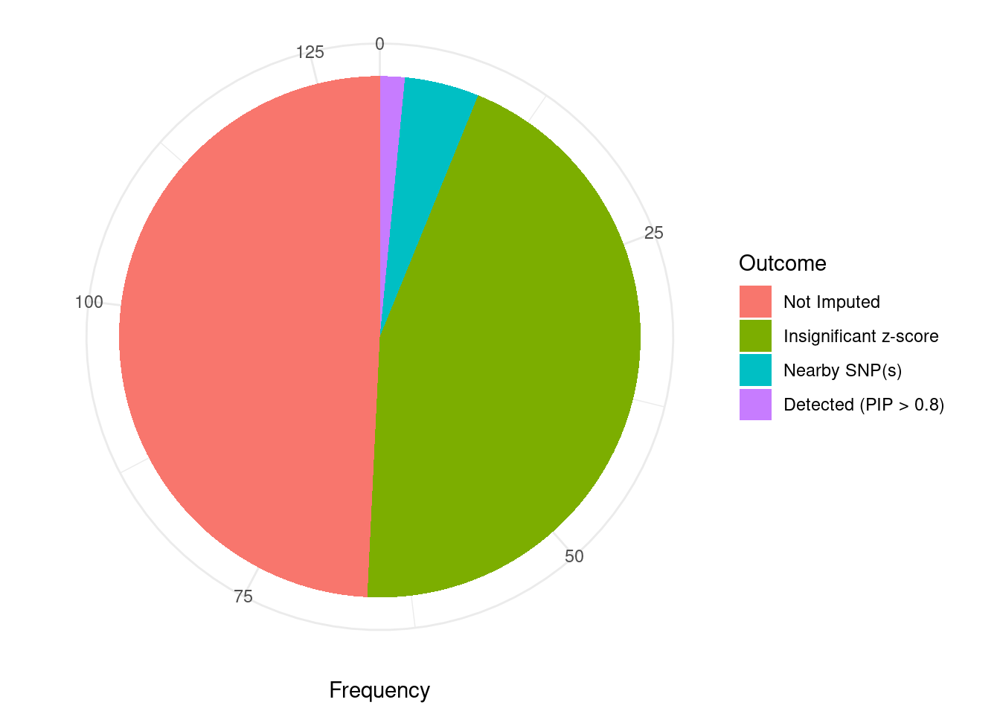
sessionInfo()R version 3.6.1 (2019-07-05)
Platform: x86_64-pc-linux-gnu (64-bit)
Running under: Scientific Linux 7.4 (Nitrogen)
Matrix products: default
BLAS/LAPACK: /software/openblas-0.2.19-el7-x86_64/lib/libopenblas_haswellp-r0.2.19.so
locale:
[1] LC_CTYPE=en_US.UTF-8 LC_NUMERIC=C
[3] LC_TIME=en_US.UTF-8 LC_COLLATE=en_US.UTF-8
[5] LC_MONETARY=en_US.UTF-8 LC_MESSAGES=en_US.UTF-8
[7] LC_PAPER=en_US.UTF-8 LC_NAME=C
[9] LC_ADDRESS=C LC_TELEPHONE=C
[11] LC_MEASUREMENT=en_US.UTF-8 LC_IDENTIFICATION=C
attached base packages:
[1] parallel stats4 stats graphics grDevices utils datasets
[8] methods base
other attached packages:
[1] GenomicRanges_1.36.1 GenomeInfoDb_1.20.0 IRanges_2.18.1
[4] S4Vectors_0.22.1 BiocGenerics_0.30.0 biomaRt_2.40.1
[7] readxl_1.3.1 forcats_0.5.1 stringr_1.4.0
[10] dplyr_1.0.7 purrr_0.3.4 readr_2.1.1
[13] tidyr_1.1.4 tidyverse_1.3.1 tibble_3.1.6
[16] WebGestaltR_0.4.4 disgenet2r_0.99.2 enrichR_3.0
[19] cowplot_1.0.0 ggplot2_3.3.5 workflowr_1.7.0
loaded via a namespace (and not attached):
[1] ggbeeswarm_0.6.0 colorspace_2.0-2 rjson_0.2.20
[4] ellipsis_0.3.2 rprojroot_2.0.2 XVector_0.24.0
[7] fs_1.5.2 rstudioapi_0.13 farver_2.1.0
[10] ggrepel_0.9.1 bit64_4.0.5 AnnotationDbi_1.46.0
[13] fansi_1.0.2 lubridate_1.8.0 xml2_1.3.3
[16] codetools_0.2-16 doParallel_1.0.17 cachem_1.0.6
[19] knitr_1.36 jsonlite_1.7.2 apcluster_1.4.8
[22] Cairo_1.5-12.2 broom_0.7.10 dbplyr_2.1.1
[25] compiler_3.6.1 httr_1.4.2 backports_1.4.1
[28] assertthat_0.2.1 Matrix_1.2-18 fastmap_1.1.0
[31] cli_3.1.0 later_0.8.0 prettyunits_1.1.1
[34] htmltools_0.5.2 tools_3.6.1 igraph_1.2.10
[37] GenomeInfoDbData_1.2.1 gtable_0.3.0 glue_1.6.2
[40] reshape2_1.4.4 doRNG_1.8.2 Rcpp_1.0.8
[43] Biobase_2.44.0 cellranger_1.1.0 jquerylib_0.1.4
[46] vctrs_0.3.8 svglite_1.2.2 iterators_1.0.14
[49] xfun_0.29 ps_1.6.0 rvest_1.0.2
[52] lifecycle_1.0.1 rngtools_1.5.2 XML_3.99-0.3
[55] zlibbioc_1.30.0 getPass_0.2-2 scales_1.1.1
[58] vroom_1.5.7 hms_1.1.1 promises_1.0.1
[61] yaml_2.2.1 curl_4.3.2 memoise_2.0.1
[64] ggrastr_1.0.1 gdtools_0.1.9 stringi_1.7.6
[67] RSQLite_2.2.8 highr_0.9 foreach_1.5.2
[70] rlang_1.0.1 pkgconfig_2.0.3 bitops_1.0-7
[73] evaluate_0.14 lattice_0.20-38 labeling_0.4.2
[76] bit_4.0.4 processx_3.5.2 tidyselect_1.1.1
[79] plyr_1.8.6 magrittr_2.0.2 R6_2.5.1
[82] generics_0.1.1 DBI_1.1.2 pillar_1.6.4
[85] haven_2.4.3 whisker_0.3-2 withr_2.4.3
[88] RCurl_1.98-1.5 modelr_0.1.8 crayon_1.5.0
[91] utf8_1.2.2 tzdb_0.2.0 rmarkdown_2.11
[94] progress_1.2.2 grid_3.6.1 data.table_1.14.2
[97] blob_1.2.2 callr_3.7.0 git2r_0.26.1
[100] reprex_2.0.1 digest_0.6.29 httpuv_1.5.1
[103] munsell_0.5.0 beeswarm_0.2.3 vipor_0.4.5